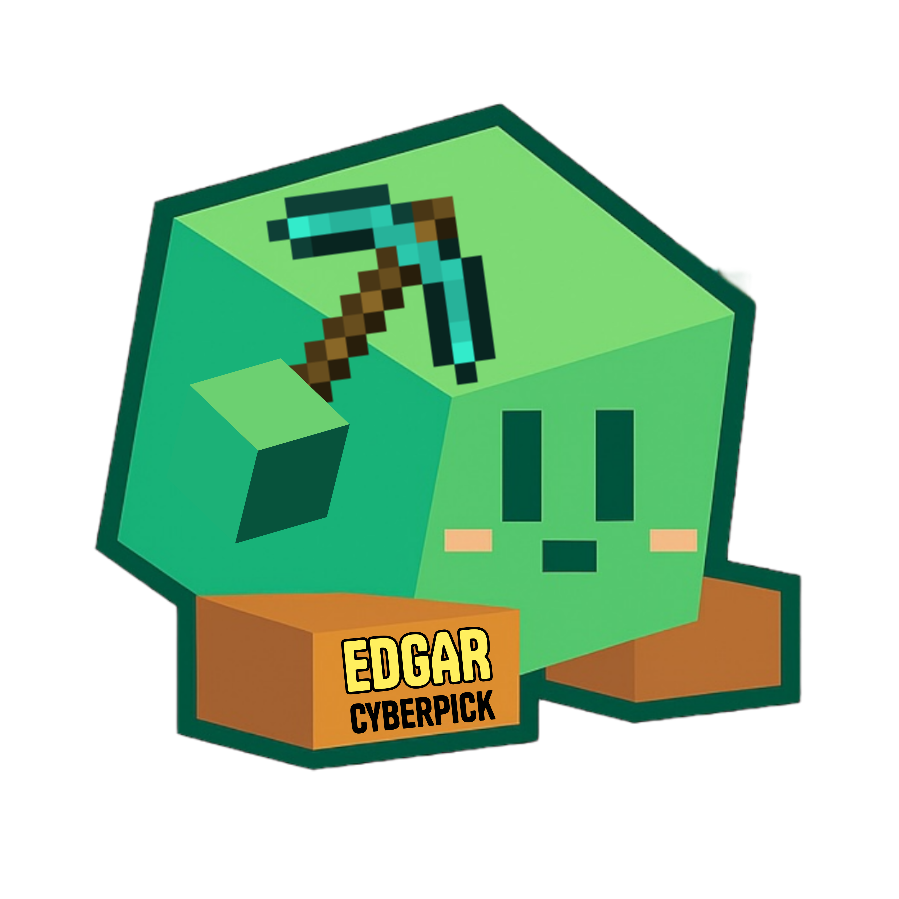

Os Malwares
Descrição breve sobre o que é malware:
Malware é um software malicioso criado para causar danos, roubar informações ou controlar dispositivos sem autorização. Pode se apresentar como vírus, worms, cavalos de Troia, entre outros, e geralmente invade computadores e celulares para prejudicar o funcionamento ou roubar dados. É importante proteger seus dispositivos contra malware para evitar problemas e perdas.